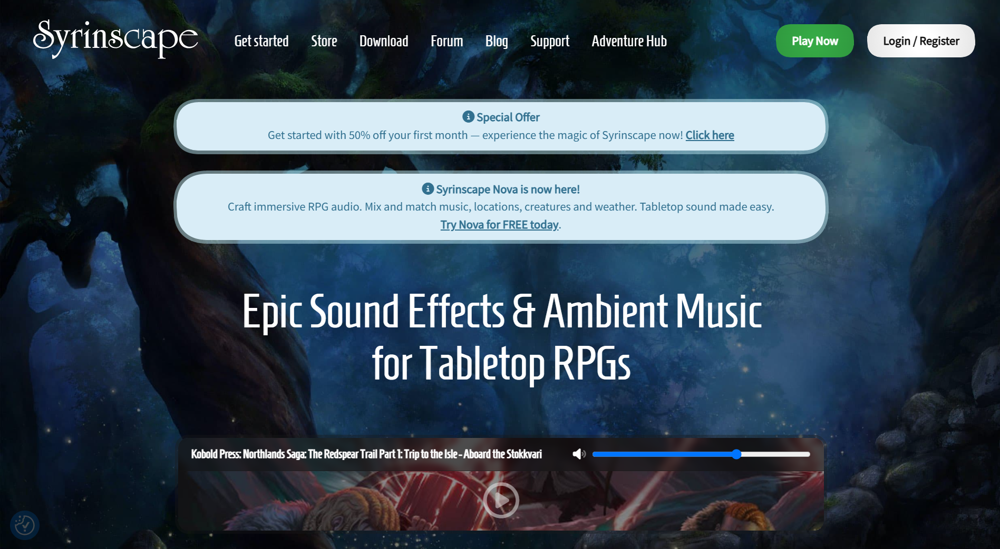
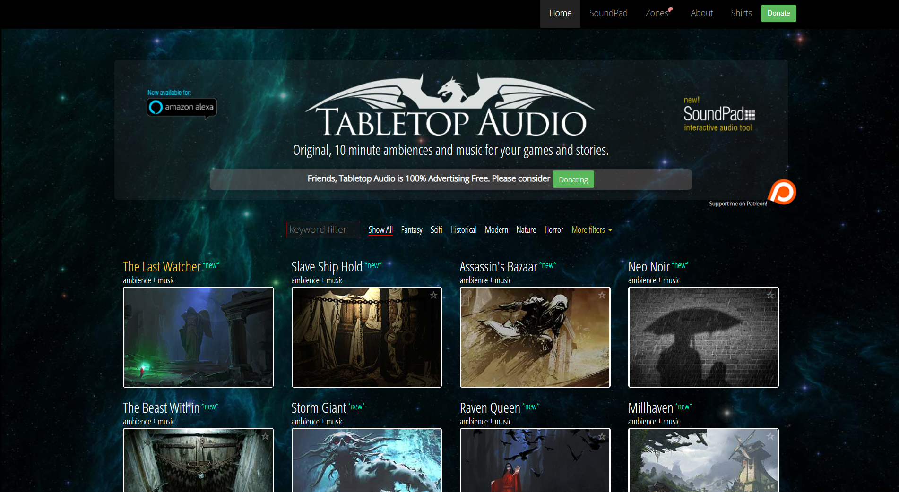

Design Scenario!
My chosen design scenario is the dynamic soundtrack-er. The goal is to design a method for users to generate constant soundtracks that adapt depending on certain environments and activities. Through this, users will have free reign to customise their soundtrack as they see fit, whether it be choosing high-tempo soundtracks for intense situations or low-tempo soundtracks for more peaceful environments.
Design Response!
My chosen response to the design scenario is a dynamic soundtrack crafted for Dungeons and Dragons, a social table-top roleplaying game. My idea is to craft a website where Dungeon Masters could customise the soundtrack depending on the situation they're in. Peaceful and quiet soundtracks when they're exploring, fast paced songs during combat sequences and a variety of different ambient sounds to play for added immersion. Users could even loop certain songs for long scenes, or put it on shuffle.
Design Framing!
The purpose of the dynamic soundtrack-er is to provide users with the ability to pick and choose soundtracks for their atmosphere. Because user input is minimal over extended periods, I would use Random (Math.random()) to allow users to personalise their playlist with a shuffled selection of their inputs. This allows users to be able to simply pick and choose what songs they would like, reducing the amount of necessary user input. A mouse event I'd be using is click, where the user can just choose the songs or sounds they would like to play out by clicking their mouse. As a result, I'll be excluding Spatial Input as mousemove Event is more about drawing on a canvas and creating music through there. Because my site is catered towards Dungeon Masters who are most likely not proficient in crafting music, I believe it's simpler and easier to just let them pick and choose instead of crafting their own music. Loop and autoplay are both techniques I'd be looking to implement to further reduce user input, whilst making a functional button element would be utilised to help users play/pause/mute the soundtrack. Other accessibility options would be using output to control the volume slider.
Design Analysis of Browser Based UIs!
Syrinscape
Synrinscape is a browser that allows users to mix and match official soundtracks and sound effects for tabletop roleplaying games, including but not limited to: Dungeons and Dragons, Pathfinder, Cyberpunk, Call of Cthulhu, etc. It even contains NPC dialogues voiced by professional voice actors for Dungeon Masters to use. Synrinscape focuses on its "dynamic, non-repeating, spatial audio engine" that allows them to create an immersive environment where the music can absorb the players.

Every individual sound is controlled within the browser and can even be downloaded on the phone. It's stated that the audio engine is designed by "using powerful algorithms to distribute samples randomly in time and in the surround state environment." What's interesting about this website in particular is that it can be played online through multiple people, where other players can join and play their own soundtracks for their actions and hear others as well. Additionally, users could upload their own sounds to the website, including soundtracks and sound effects. Syrinscape seems to be an ideal example of a dynamic soundtrack-er for dungeon masters, as it allows users to freely input songs of their choosing whilst simultaneously allowing others to join in the same lobbies. I believe I'd be looking to Syrinscape for the most inspiration, as they embody the core features of my website I'd be looking to design. The only problem is how I'd be able to differentiate my own website to Syrinscape, which is a unique problem I'd have to look into.
Tabletop Audio
Tabletop Audio is significantly more straightforward and simpler to use, though it does not provide the depth or complexity that Syrinscape has. Tabletop Audio focuses on providing copyright-free tracks whereas Syrinscape provides a mixture of official and copyright-free tracks.

TableTop Audio has a function where it allows you to craft your own custom soundpad, where you can gather all the songs and sounds you'd like for your campaign. It's very straight forward and has little functionality besides having the ability to loop songs. One of the cons is that the custom soundpads only allow you to imbue a total of 40 songs. It's still a lot, but for someone running a campaign with multiple sessions, they may find it tedious continuously clearing the soundpad over and over again every few sessions. One of the neat functions about the soundpad is that it allows you to save ones you've created, which I believe would be a very useful tool in my website. I could allow users to generate playlists and save them for later use.

Cubic Sequencer!
A more creative approach to a dynamic soundtrack-er, Cubic Sequencer allows users to create music not by selecting pre-existing soundtracks but by allowing them to craft it themselves. Through this users can craft songs reminscent of 8-bit music. Though I do not intend to emulate this as I've already decided I would not use Spatial Input as a primary technique to craft songs, I do find this site very inspirational to see. The way it allows users to change the pitch, tempo, etc of the song is a level of customisation I think could prove handy in my own browser. If I were to differentiate my own site from Syrinscape, I'd look at this function here where it allows users to change the audio through speeding/slowing the BPM, raising/lowering the pitch, etc.

Jungle Life!
Jungle Life is more in tune with what I'd look to create if I were to create a dynamic soundtrack-er that allows for customising the sound itself. Jungle Life is a dynamic soundtrack-er that allows users to choose what ambience they'd like to play in the background. As per the title, the sounds are themed towards ambiences you'd hear in the jungle. The sound of raindrops, birds chirping, frogs croaking, etc. Though this is not a direction I'd go for as Jungle Life is focused solely on the ambience side of things, I believe the way they've structured the site and allowed it for customisation is amazing and would be incredibly helpful for my website. As I've said last time, I would look towards how I can allow my users to not only pick and play certain soundtracks, but also how they could customise the audio as well. In that regard, I believe this website is strong as a source of reference.